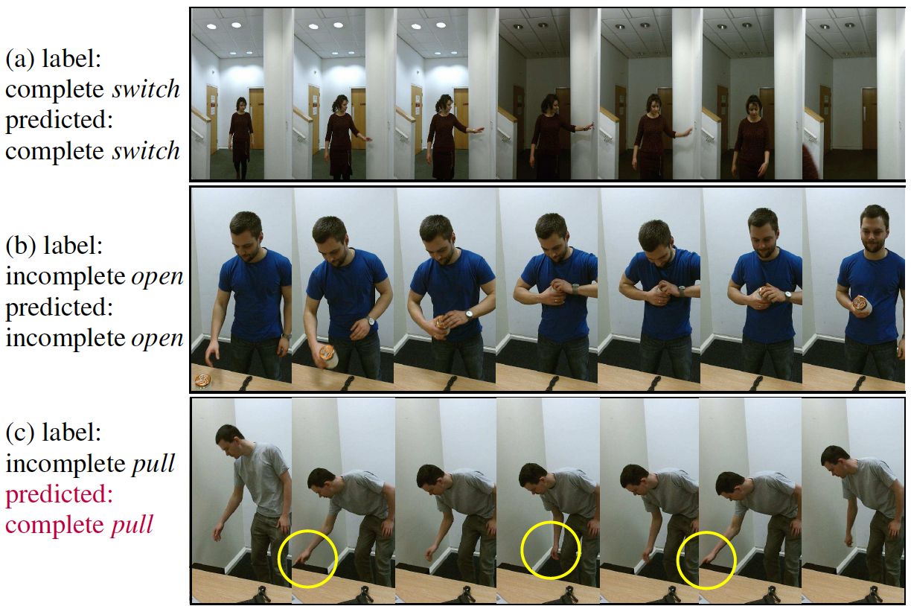

Farnoosh Heidarivincheh, Majid Mirmehdi, Dima Damen
Robust motion representations for action recognition have achieved remarkable performance in both controlled and in-the-wild scenarios.
Such representations are primarily assessed for their ability to label a sequence according to some predefined action classes (e.g. walk, wave, open). Although increasingly accurate, these classifiers are likely to label a sequence, even if the action has not been fully completed, because the motion observed is similar enough to the training set. Consider the case where one attempts to drink but realises the beverage is too hot. A drinking-vs-all classifier is likely to recognise this action as drinking regardless.
In our BMVC2016 paper, we introduced the term action completion as a step beyond the task of action recognition. It aims to recognise whether the action's goal has been successfully achieved. The notion of completion differs per action and could be infeasible to verify using a visual sensor, however, for many actions, an observer would be able to make the distinction by noticing subtle differences in motion.
In our BMVC2018 paper, we introduce completion moment detection for actions - the problem of locating the moment of completion, when the action's goal is confidently considered achieved. The paper proposes a joint classification-regression recurrent model that predicts completion from a given frame, and then integrates frame-level contributions to detect sequence-level completion moment. We introduce a recurrent voting node that predicts the frame's relative position of the completion moment by either classification or regression. The method is also capable of detecting incompletion. For example, the method is capable of detecting a missed ball-catch, as well as the moment at which the ball is safely caught. We test the method on 16 actions from three public datasets, covering sports as well as daily actions. Results show that when combining contributions from frames prior to the completion moment as well as frames post completion, the completion moment is detected within one second in 89% of all tested sequences.
Farnoosh Heidarivincheh, Majid Mirmehdi and Dima Damen (2018). Action Completion: A Temporal Model for Moment Detection. British Machine Vision Conference, New Castle, UK. Arxiv, Completion Annotations, Video
Farnoosh Heidarivincheh, Majid Mirmehdi and Dima Damen (2016). Beyond Action Recognition: Action Completion in RGB-D Data. British Machine Vision Conference, York, UK. BMVC Proceedings, PDF, Abstract [Note: Fig3 updated]
Action Completion Annotations available at: Project GitHub
Full dataset (RGB + Depth + Skeleton) [33GB] available at: http://dx.doi.org/10.5523/bris.66qry08cv1fj1eunwxwob3fjz
